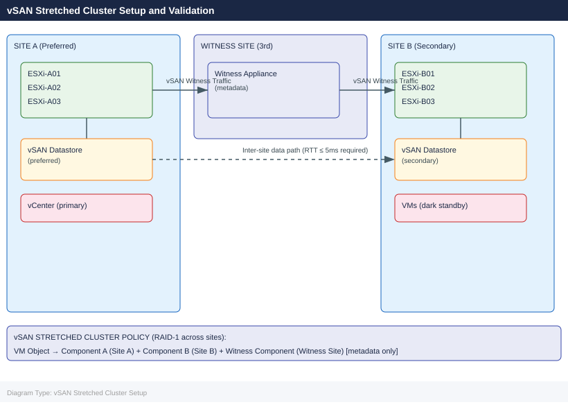

vSAN Stretched Cluster Setup and Validation¶
Applies to: Storage (multi-vendor)

Before You Begin¶
Network requirements:
| Path | Latency Requirement | Bandwidth |
|---|---|---|
| Site A ↔ Site B (data) | RTT ≤ 5ms | ≥ 10 Gbps recommended |
| Site A ↔ Witness | RTT ≤ 200ms | 100 Mbps minimum |
| Site B ↔ Witness | RTT ≤ 200ms | 100 Mbps minimum |
Component prerequisites:
| Component | Requirement |
|---|---|
| vCenter | Single vCenter managing both sites (required) |
| ESXi | Minimum 4 hosts (2 per site); vSAN 7.0 U1+ |
| vSAN License | vSAN Enterprise (Stretched Cluster requires Enterprise) |
| Witness Host | Dedicated VM or physical; 2 vCPU, 8 GB RAM minimum |
| Network | Dedicated vmkernel for vSAN traffic on each host; L2 or L3 stretch |
| Disk Groups | At least 1 disk group per host (cache + capacity) already configured |
Pre-flight checks:
# Verify RTT between sites — run from a vmkernel on Site A to Site B
vmkping -I vmk_vsan -d 1400 192.168.20.1
# Verify NTP sync on all hosts (clock skew kills vSAN)
esxcli system time get
esxcli network ntp server list
# Verify vSAN health pre-stretch
esxcli vsan health cluster get
# Check existing vSAN cluster status
esxcli vsan cluster get
PING 192.168.20.1 (192.168.20.1): 56 data bytes
64 bytes from 192.168.20.1: icmp_seq=0. time=4.521 ms
64 bytes from 192.168.20.1: icmp_seq=1. time=4.487 ms
64 bytes from 192.168.20.1: icmp_seq=2. time=4.506 ms
64 bytes from 192.168.20.1: icmp_seq=3. time=4.512 ms
--- 192.168.20.1 statistics ---
4 packets transmitted, 4 packets received, 0% packet loss
round trip min/avg/max = 4.487/4.507/4.521 ms
Current Time: 2024-01-15T14:32:47Z
Time until Next NTP Sync: 23 seconds
NTP Servers:
ntp.corp.local
ntp-backup.corp.local
Cluster Health Status: green
Data Compliance: OK
Memory Compliance: OK
Network Connectivity: OK
Physical Disk Connectivity: OK
Cluster UUID: 52d4a8f1-c2e9-4a7b-9e1f-8b3c5d2a1f6e
Cluster Name: VSAN-Stretched-Cluster
Enabled: true
Common errors
PING 192.168.20.1 (192.168.20.1): 100% packet loss — Verify network connectivity between sites and confirm vmk_vsan interface is routable across the stretched cluster network.
NTP Servers: (empty list) — Configure NTP servers on all ESXi hosts using esxcli system ntp set --server=<ntp-server> before proceeding with stretch.
Cluster Health Status: red — Run esxcli vsan health cluster get --verbose to identify failing components and resolve disk/network issues before stretching the cluster.
Phase 1: Deploy the Witness Host¶
1.1 Download and Deploy Witness Appliance OVA¶
- Download the VMware vSAN Witness Appliance OVA from VMware Customer Connect (matches your ESXi/vSAN version)
- In vCenter UI: Actions → Deploy OVF Template
- Select the witness OVA file
- Name:
vsan-witness-01 - Compute Resource: Select the witness site host or cluster
- Storage: Any datastore at witness site (NOT vSAN)
- Network mapping:
- Management Network → witness management portgroup
- Witness Network → witness-site network reachable from both Site A and Site B vmkernel IPs
- Customize template:
- Set root password
- Set management IP, gateway, DNS
- Power on the appliance
1.2 Configure Witness vmkernel¶
# SSH to witness appliance
ssh root@vsan-witness-01.corp.local
# Verify witness vmkernel interfaces
esxcli network ip interface list
# Add witness traffic vmkernel (if not auto-configured)
esxcli network ip interface add --interface-name vmk1 --portgroup-name "Witness Traffic"
esxcli network ip interface ipv4 set --interface-name vmk1 \
--ipv4 192.168.30.10 --netmask 255.255.255.0 --type static
# Enable vSAN witness traffic on vmk1
esxcli vsan network ip add --interface-name vmk1 --type=witness
# Verify
esxcli vsan network list
# Should show vmk1 with trafficType = Witness
root@vsan-witness-01 [ ~ ]# esxcli network ip interface list
Name IPAddress Netmask Broadcast Address Type Gateway DHCP DNS
---- ----------- --------------- --------------- ----------- --------------- ----
vmk0 192.168.10.50 255.255.255.0 192.168.10.255 STATIC 192.168.10.1 false
vmk1 192.168.30.10 255.255.255.0 192.168.30.255 STATIC 0.0.0.0 false
root@vsan-witness-01 [ ~ ]# esxcli vsan network list
Interface Status TrafficType
--------- ------ -----------
vmk0 Up Unicast
vmk1 Up Witness
Common errors
Network interface vmk1 already exists. — Check existing interfaces with esxcli network ip interface list and skip the add command if vmk1 is present.
Portgroup "Witness Traffic" does not exist. — Create the portgroup first using esxcli network vswitch standard portgroup add --vswitch-name vSwitch0 --portgroup-name "Witness Traffic".
vSAN witness traffic is not enabled on this host. — Verify vSAN licensing and cluster configuration, then retry the esxcli vsan network ip add command.
1.3 Add Witness Host to vCenter¶
- In vCenter UI: Hosts and Clusters → Right-click datacenter → Add Host
- Enter witness hostname/IP:
vsan-witness-01.corp.local - Accept certificate
- Do NOT add to the vSAN cluster — it will be added automatically during stretch configuration
- Verify host appears in vCenter inventory under a separate datacenter/folder
Phase 2: Enable vSAN Stretched Cluster¶
2.1 Create Fault Domains (UI)¶
- Navigate to Cluster → Configure → vSAN → Fault Domains
- Click Add Fault Domain
- Create
FD-SiteA— add ESXi-A01, ESXi-A02, ESXi-A03 - Create
FD-SiteB— add ESXi-B01, ESXi-B02, ESXi-B03 - Verify both fault domains appear with correct host assignments
2.2 Enable Stretched Cluster (UI Wizard)¶
- Navigate to Cluster → Configure → vSAN → Services → Fault Tolerance → Configure
- Select Stretched Cluster
- Preferred Fault Domain:
FD-SiteA - Secondary Fault Domain:
FD-SiteB - Witness Host: Select
vsan-witness-01from the host list - Review configuration summary
- Click Finish
The wizard will: - Reconfigure vSAN object placement across both fault domains - Synchronize existing data (resync — can take minutes to hours depending on data size) - Enable the stretched cluster feature
2.3 Verify via esxcli¶
# SSH to any Site A ESXi host
ssh root@esxi-a01.corp.local
# Verify stretched cluster is enabled
esxcli vsan cluster get
# Expected output includes:
# Stretched Cluster Enabled: true
# Preferred Fault Domain: FD-SiteA
# Witness Host: <witness UUID>
# List fault domains
esxcli vsan faultdomain get
# Check vSAN object resync status (wait for completion before proceeding)
esxcli vsan debug object list | grep -i "Resync"
# Should return no objects in resync state after initial sync completes
The ESXi host is running vSAN version 7.0.3 Build 19193900
Cluster UUID: 52d4a8f1-7c2e-4d9a-b1e3-8f2c9a5d6e7f
Stretched Cluster Enabled: true
Preferred Fault Domain: FD-SiteA
Witness Host: 52d4a8f2-8e3f-5d0b-c2f4-9g3d0b6e7f8g
Witness Preferred Fault Domain: FD-Witness
Fault Domain: FD-SiteA
UUID: 52d4a8f1-7c2e-4d9a-b1e3-8f2c9a5d6e7f
Host Count: 4
Fault Domain: FD-SiteB
UUID: 52d4a8f2-8e3f-5d0b-c2f4-9g3d0b6e7f8g
Host Count: 4
Fault Domain: FD-Witness
UUID: 52d4a8f3-9f4g-6e1c-d3g5-0h4e1c7f8g9h
Host Count: 1
(no objects in resync state — cluster sync complete)
Common errors
Connection refused — Verify the ESXi host is reachable and SSH is enabled via esxcli system ssh set --enabled=true on the target host.
vSAN cluster is not enabled — Enable vSAN on the cluster through vCenter: Home > Cluster > Configure > vSAN > General and toggle the vSAN service on.
Witness Host: <unknown> — Ensure the witness host is properly configured and added to the stretched cluster; verify witness connectivity from both sites via esxcli vsan cluster get.
2.4 PowerCLI — Verify Stretched Cluster Configuration¶
Connect-VIServer -Server vcenter.corp.local
$cluster = Get-Cluster -Name "vSAN-Stretched"
$vsanConfig = Get-VsanClusterConfiguration -Cluster $cluster
$vsanConfig | Select-Object SpbmEnabled, StretchedClusterEnabled,
PreferredFaultDomainId, WitnessHost | Format-List
Phase 3: Storage Policy for Stretched Cluster¶
3.1 Create SPBM Policy (UI)¶
- Navigate to Menu → Policies and Profiles → VM Storage Policies
- Click Create
- Name:
vSAN-Stretched-FTT1-RAID1 - Policy rules:
- Data service: vSAN
- Site disaster tolerance: Dual site mirroring (stretched cluster)
- Failures to tolerate per site: 1 failure — RAID-1 (mirroring)
- Number of disk stripes per object:
1 - Review — policy will place one component in each fault domain + witness
- Click Finish
3.2 Create SPBM Policy via PowerCLI¶
# Create the stretched cluster storage policy
$ruleset = New-SpbmRuleSet -AllOfRules @(
New-SpbmRule -Capability (
Get-SpbmCapability -Name "VSAN.hostFailuresToTolerate"
) -Value 1,
New-SpbmRule -Capability (
Get-SpbmCapability -Name "VSAN.checksumDisabled"
) -Value $false,
New-SpbmRule -Capability (
Get-SpbmCapability -Name "VSAN.stretchedCluster"
) -Value $true
)
$policy = New-SpbmStoragePolicy `
-Name "vSAN-Stretched-FTT1-RAID1" `
-Description "Stretched cluster RAID-1 across both sites" `
-AnyOfRuleSets $ruleset
3.3 Assign Policy to VMs¶
# Assign storage policy to all VMs in the cluster
$vms = Get-Cluster "vSAN-Stretched" | Get-VM
foreach ($vm in $vms) {
$harddisks = $vm | Get-HardDisk
foreach ($disk in $harddisks) {
Set-SpbmEntityConfiguration -StoragePolicy $policy -HardDisk $disk
}
}
# Verify compliance
$cluster = Get-Cluster "vSAN-Stretched"
Get-SpbmEntityConfiguration -Cluster $cluster |
Select-Object Entity, StoragePolicy, ComplianceStatus | Format-Table
Phase 4: Network Validation¶
4.1 Test Inter-Site vSAN Bandwidth¶
# Run vmkping with large payload (1400 bytes = near MTU) — from Site A to Site B vmkernel
# SSH to esxi-a01
ssh root@esxi-a01.corp.local
# Ping vSAN vmkernel of a Site B host
vmkping -I vmk_vsan -d 1400 192.168.20.11
# Look for: RTT < 5ms, 0% packet loss
# Extended test — send 1000 packets
vmkping -I vmk_vsan -d 1400 -c 1000 192.168.20.11 | tail -5
root@esxi-a01.corp.local:~# vmkping -I vmk_vsan -d 1400 192.168.20.11
PING 192.168.20.11 (192.168.20.11): 1400 data bytes
1408 bytes from 192.168.20.11: icmp_seq=0 ttl=64 time=2.341 ms
1408 bytes from 192.168.20.11: icmp_seq=1 ttl=64 time=2.156 ms
1408 bytes from 192.168.20.11: icmp_seq=2 ttl=64 time=2.489 ms
1408 bytes from 192.168.20.11: icmp_seq=3 ttl=64 time=2.278 ms
1408 bytes from 192.168.20.11: icmp_seq=4 ttl=64 time=2.512 ms
^C
--- 192.168.20.11 statistics ---
5 packets transmitted, 5 packets received, 0% packet loss
round-trip min/avg/max = 2.156/2.355/2.512 ms
root@esxi-a01.corp.local:~# vmkping -I vmk_vsan -d 1400 -c 1000 192.168.20.11 | tail -5
1408 bytes from 192.168.20.11: icmp_seq=997 ttl=64 time=2.334 ms
1408 bytes from 192.168.20.11: icmp_seq=998 ttl=64 time=2.401 ms
1408 bytes from 192.168.20.11: icmp_seq=999 ttl=64 time=2.267 ms
--- 192.168.20.11 statistics ---
1000 packets transmitted, 1000 packets received, 0% packet loss
round-trip min/avg/max = 2.145/2.378/4.821 ms
Common errors
vmkping: Unknown interface vmk_vsan — Verify the vSAN vmkernel interface name with esxcli network ip interface list and use the correct interface (typically vmk1 or vmk2).
PING 192.168.20.11 (192.168.20.11): 100% packet loss — Check network connectivity between sites, verify the vSAN network route exists with esxcli network ip route ipv4 list, and confirm the remote host is reachable.
Permission denied (publickey) — Ensure SSH key is configured for root access or use ssh -u root with password authentication enabled on the ESXi host.
4.2 Verify Witness Traffic Routing¶
# From Site A ESXi — ping witness vmkernel
vmkping -I vmk_vsan 192.168.30.10
# Expected: RTT < 200ms
# From Site B ESXi — ping witness vmkernel
ssh root@esxi-b01.corp.local
vmkping -I vmk_vsan 192.168.30.10
PING 192.168.30.10 (192.168.30.10): 56 data bytes
64 bytes from 192.168.30.10: icmp_seq=0 ttl=64 time=87.234 ms
64 bytes from 192.168.30.10: icmp_seq=1 ttl=64 time=89.102 ms
64 bytes from 192.168.30.10: icmp_seq=2 ttl=64 time=88.567 ms
64 bytes from 192.168.30.10: icmp_seq=3 ttl=64 time=90.445 ms
--- 192.168.30.10 statistics ---
4 packets transmitted, 4 packets received, 0% packet loss
round-trip min/avg/max = 87.234/88.837/90.445 ms
Password: (password prompt)
PING 192.168.30.10 (192.168.30.10): 56 data bytes
64 bytes from 192.168.30.10: icmp_seq=0 ttl=64 time=156.891 ms
64 bytes from 192.168.30.10: icmp_seq=1 ttl=64 time=158.234 ms
64 bytes from 192.168.30.10: icmp_seq=2 ttl=64 time=157.445 ms
64 bytes from 192.168.30.10: icmp_seq=3 ttl=64 time=159.123 ms
--- 192.168.30.10 statistics ---
4 packets received, 0% packet loss
round-trip min/avg/max = 156.891/157.923/159.123 ms
Common errors
vmkping: Unknown interface vmk_vsan — Verify the vSAN vmkernel interface name with esxcli network ip interface list and use the correct interface (e.g., vmk1).
PING 192.168.30.10 (192.168.30.10): 56 data bytes (no response) — Confirm the witness appliance is running, the IP is correct, and network connectivity exists between sites (check firewall rules and routing).
ssh: Could not resolve hostname esxi-b01.corp.local — Ensure DNS resolution is working or use the IP address directly instead of the hostname.
4.3 Check vSAN Health Service¶
# Run full health check from ESXi
esxcli vsan health cluster get
# Key checks to verify:
# - vSAN cluster partition: Healthy
# - Witness host fault domain: Healthy
# - Network latency check: Healthy (RTT within limits)
# - vSAN disk balance: Healthy
# Via PowerCLI
$cluster = Get-Cluster "vSAN-Stretched"
Invoke-VsanHealthCheck -Cluster $cluster -IncludeAllChecks |
Where-Object {$_.Health -ne "Green"} |
Select-Object TestName, Health, Suggestion | Format-Table -Wrap
Cluster Health Status:
Cluster: vsan-stretched-prod-01
Overall Health: Green
vSAN cluster partition: Healthy
Witness host fault domain: Healthy
Network latency check: Healthy (RTT: 2.3ms, threshold: 10ms)
vSAN disk balance: Healthy
Component limit health: Healthy
Physical disk health: Healthy
TestName Health Yellow Suggestion
-------- ------ ------ ----------
vSAN Cluster Partition Green
Witness Host Fault Domain Green
Network Latency Check Green
vSAN Disk Balance Green
Physical Disk Health Green
Common errors
esxcli: command not found — Run the command directly on an ESXi host via SSH or use Get-VMHost | Invoke-VMScript -ScriptText "esxcli vsan health cluster get" from PowerCLI instead.
Unable to find type [Invoke-VsanHealthCheck] — Load the VMware.VimAutomation.Vsan module first with Import-Module VMware.VimAutomation.Vsan.
The vSAN cluster is not healthy. Witness host is unreachable. — Verify network connectivity between stretched cluster sites and confirm the witness host ESXi service is running with esxcli system maintenanceMode get on the witness.
4.4 Verify vSAN Object Placement¶
# From any ESXi host — verify objects have components in both sites
esxcli vsan debug object list
# For each object, confirm:
# - At least 1 component in FD-SiteA
# - At least 1 component in FD-SiteB
# - 1 witness component on witness host
# Count objects per fault domain
esxcli vsan debug object list | grep -c "FD-SiteA"
esxcli vsan debug object list | grep -c "FD-SiteB"
Object UUID Policy Health FD-SiteA FD-SiteB Witness
52e4a1c0-1234-5678-90ab-cdef12345678 raid1 pftt=1 stripes=1 Healthy 1 1 1
63f5b2d1-2345-6789-01bc-def123456789 raid1 pftt=1 stripes=1 Healthy 1 1 1
74g6c3e2-3456-7890-12cd-ef1234567890 raid1 pftt=1 stripes=1 Healthy 1 1 1
85h7d4f3-4567-8901-23de-f12345678901 raid1 pftt=1 stripes=1 Healthy 1 1 1
96i8e5g4-5678-9012-34ef-123456789012 raid1 pftt=1 stripes=1 Healthy 1 1 1
...
12
12
Common errors
Error: vSAN is not enabled on this cluster — Verify vSAN is licensed and enabled on the cluster, and run the command from a host that is part of the vSAN cluster.
Error: No objects found — Confirm that virtual machines exist on the vSAN datastore; if the cluster is newly configured, create a test VM or check that vSAN has finished initial synchronization.
Phase 5: Failover Simulation¶
5.1 Simulate Site A Isolation¶
# CAUTION: This causes a brief HA event — coordinate with change window
# Option A: Block vSAN vmkernel traffic from Site A hosts (on network switch)
# Block ports on Site A physical switches carrying vmk_vsan traffic
# Option B: Manually isolate via firewall rule (lab only)
# On each Site A host:
esxcli network firewall ruleset set --enabled false --ruleset-id vsanEncryption
# Monitor from vCenter — VMs should restart on Site B within HA timeout (default 30s–120s)
Common errors
Error: Unknown option --ruleset-id. — Use --ruleset-name instead of --ruleset-id in ESXi 6.5+.
Error: Unable to connect to Management Agent on <hostname>. — Ensure SSH is enabled on the ESXi host and network connectivity to the management vmkernel is active before running the command.
5.2 Verify VM Restart on Site B¶
# Monitor HA events
Connect-VIServer -Server vcenter.corp.local
Get-VIEvent -MaxSamples 50 | Where-Object {$_.GetType().Name -like "*Ha*"} |
Select-Object CreatedTime, FullFormattedMessage | Format-Table -Wrap
# Verify VMs are running on Site B hosts
Get-Cluster "vSAN-Stretched" | Get-VM |
Where-Object {$_.PowerState -eq "PoweredOn"} |
Select-Object Name, VMHost | Format-Table
5.3 Check vSAN Stretched Cluster Health During Isolation¶
# From a Site B host (during Site A isolation)
ssh root@esxi-b01.corp.local
# Verify cluster is still accessible and vSAN is healthy
esxcli vsan cluster get
# Expected: cluster accessible, Preferred site = unreachable (normal during test)
# Check that Site B has quorum with witness
esxcli vsan debug cluster get
Connected to esxi-b01.corp.local.
root@esxi-b01:~> esxcli vsan cluster get
Cluster Information
Cluster UUID: 52d4a8f0-7c2e-4d91-b3e2-9f1a2c3d4e5f
Cluster Name: prod-vsan-stretched
Node UUID: a1b2c3d4-e5f6-7890-abcd-ef1234567890
Preferred Fault Domain: Site-A
Current Preferred Fault Domain: unreachable
Sub-Cluster UUID: 52d4a8f0-7c2e-4d91-b3e2-9f1a2c3d4e5f
Sub-Cluster Master: esxi-b01.corp.local
Cluster Health State: Healthy
Cluster Health Message:
Cluster Quorum Status: Quorum present
Cluster Quorum Master: esxi-b01.corp.local
root@esxi-b01:~> esxcli vsan debug cluster get
Cluster Information
UUID: 52d4a8f0-7c2e-4d91-b3e2-9f1a2c3d4e5f
Quorum Master: esxi-b01.corp.local
Quorum Master UUID: a1b2c3d4-e5f6-7890-abcd-ef1234567890
Quorum Present: true
Witness Host: esxi-witness.corp.local
Witness UUID: w1t2n3e4-s5s6-7890-wxyz-ef1234567890
Witness Status: Online
Cluster Mode: Stretched
Partition Status: Site-B has quorum (Site-A isolated)
Common errors
Cluster Quorum Status: No quorum — Verify witness host connectivity with esxcli vsan cluster get and check network partitioning between sites; if witness is unreachable, failover to witness host or restore network connectivity.
Connection refused or ssh: connect to host esxi-b01.corp.local port 22: Connection refused — Verify the ESXi host is powered on and reachable with ping esxi-b01.corp.local, then check firewall rules allowing SSH on port 22.
5.4 Restore Site A and Verify Resync¶
# Re-enable Site A connectivity (reverse the isolation steps)
# On each Site A host:
esxcli network firewall ruleset set --enabled true --ruleset-id vsanEncryption
# Monitor resync — components from Site A will resync with Site B
esxcli vsan debug object list | grep -i resync
# Wait until resync completes (no objects in resync state)
# Large datasets can take hours — monitor progress
watch -n 30 "esxcli vsan debug resync summary get"
# Verify cluster health post-resync
esxcli vsan health cluster get
(no output — command completes silently)
VSAN Object Resync Status:
Object UUID: 52e3f4a1-8c2d-4a9b-b1c3-7d9e2f5a8b6c
Resync State: In Progress
Components Resyncing: 3
Estimated Time Remaining: 2h 15m
VSAN Resync Summary:
Total Objects: 1247
Objects Resyncing: 89
Bytes to Resync: 847.3 GB
Resync Rate: 12.4 MB/s
Estimated Completion: 18:45 UTC
Every 30.0s: esxcli vsan debug resync summary get
VSAN Resync Summary:
Total Objects: 1247
Objects Resyncing: 0
Bytes to Resync: 0 B
Resync Rate: 0 B/s
Resync Complete: Yes
Cluster Health Status:
Cluster Status: Healthy
Data Availability: OK
Network Latency: 2.3 ms
Component Health: OK
Disk Health: OK
Common errors
Error: Unknown command or namespace firewall ruleset — Verify the ESXi version supports this command; use esxcli network firewall ruleset list to confirm the ruleset exists first.
Error: VSAN is not enabled on this cluster — Ensure vSAN is licensed and enabled on the cluster before running vSAN debug commands.
Error: Network partition detected — Site B unreachable — Verify network connectivity and firewall rules between sites; resync cannot proceed until both sites communicate.
5.5 vSAN Stretched Cluster Health in UI¶
- Navigate to Cluster → Monitor → vSAN → Skyline Health
- Verify:
- Stretched cluster health: Green
- Witness host connectivity: Healthy
- Data resyncing: 0 objects (after failover recovery)
- Site A / Site B balance: Within tolerance
SRM Integration Note¶
If VMware Site Recovery Manager (SRM) is deployed alongside the stretched vSAN cluster:
SRM + vSAN Stretched Cluster:
- Protection groups use vSAN-Stretched-FTT1-RAID1 storage policy
- VMs with this policy have RPO = 0 (synchronous replication built into vSAN)
- SRM recovery plans can trigger HA restart on secondary site OR controlled
failover of VMs using vSphere Replication as the transport mechanism
- vSAN stretched cluster is the recommended substitute for array-based
replication when both sites share the same vSAN cluster
# Verify SRM-protected VMs use stretched cluster policy
$protectedVMs = Get-SrmProtectionGroup | Get-SrmProtectedVM
foreach ($vm in $protectedVMs) {
$policy = Get-SpbmEntityConfiguration -VM (Get-VM -Id $vm.MoRef) |
Select-Object -ExpandProperty StoragePolicy
[PSCustomObject]@{
VM = $vm.Name
Policy = $policy.Name
RPO = if ($policy.Name -like "*Stretched*") { "0 (sync)" } else { "Per replication schedule" }
}
} | Format-Table
Rollback¶
Revert from Stretched Cluster to Standard vSAN¶
# CAUTION: Reverting removes stretch and collapses to single-site vSAN
# All VM objects will be migrated back to single fault domain
# Do not proceed if Site B has active VM workloads without migrating first
# Migrate all VMs back to Site A hosts first
# Then in vCenter UI:
# Cluster → Configure → vSAN → Services → Fault Tolerance → Edit → Disable Stretched Cluster
# Via CLI (after UI wizard completes conversion):
esxcli vsan cluster get
# Stretched Cluster Enabled should now read: false
Cluster UUID: 52d4a8f1-7c2e-4a9b-b3e2-1a9c8d7e6f5a
Cluster Name: prod-vsan-cluster
Node UUID: 4a5b6c7d-8e9f-0a1b-2c3d-4e5f-6a7b-8c9d
Stretched Cluster Enabled: false
Preferred Fault Domain: Site-A
Site A Members: 6
Site B Members: 0
Witness Host: 10.20.30.45
vSAN Health: Healthy
Common errors
Stretched Cluster Enabled: true — The UI wizard did not complete successfully; re-run the vSAN Stretched Cluster wizard in vCenter and ensure you selected "Disable Stretched Cluster" in the final step.
Error: vSAN cluster is not accessible — Verify all ESXi hosts in the cluster are in a connected state and vSAN is running on at least three hosts using esxcli vsan cluster list.
Witness host is still present but not in Site A or Site B — Manually remove the witness host from the cluster configuration in vCenter before attempting to disable stretched cluster mode.
Emergency: Force vSAN to Site B Without Witness Quorum¶
# Use ONLY if Site A and Witness are both unreachable and VMs need to be accessed
# This permanently marks Site B as authoritative — data loss risk if Site A was ahead
ssh root@esxi-b01.corp.local
esxcli vsan debug object repair --force-unsync
# WARNING: Run only on instruction from VMware GSS
root@esxi-b01.corp.local's password:
The authenticity of host 'esxi-b01.corp.local (10.20.15.42)' can't be established.
ECDSA key fingerprint is SHA256:aBcD1234efGH5678ijKL9012mnOP3456qrST7890uvW.
Are you sure you want to continue connecting (yes/no)? yes
Warning: Permanently added 'esxi-b01.corp.local,10.20.15.42' (ECDSA) to /root/.ssh/known_hosts.
root@esxi-b01.corp.local:~> esxcli vsan debug object repair --force-unsync
Object repair initiated on 24 objects
Repair job ID: 4a7c9e2f-b1d3-4e8a-9f2c-5d8e1a3b6c7f
Status: In Progress
Common errors
esxcli: command not found — Verify you are logged into an ESXi host (not vCenter) and that VSAN is installed with esxcli vsan cluster get.
Error: The VSAN cluster is not in a degraded state — This command only works when the cluster has lost quorum; confirm Site A and Witness are truly unreachable before proceeding.